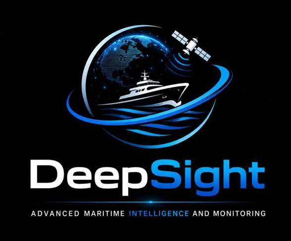

Maverick Technologies builds intelligent monitoring, tracking and intelligence systems for organisations that demand superior visibility across complex, wide-area environments.
Maverick Technologies specialises in space and terrestrial systems — positioned at the convergence of satellite technology, terrestrial networks, data intelligence and operational decision support.
We combine different technology layers into practical systems that real organisations can deploy. These layers include satellite observation, terrestrial communication networks, live data feeds, geospatial analytics, monitoring dashboards and intelligence outputs.
Our objective is to convert complex technical data into useful information that clients use to make confident decisions — faster and with greater certainty. We are not only a software company, and not only a satellite-data company. We integrate both into solutions that solve real problems.
A South African technology company with international ambition and world-class delivery standards — built on the belief that Africa can produce globally competitive technology.

DeepSight is not a map. It is an intelligent maritime monitoring and intelligence system that combines satellite observation, terrestrial tracking data and advanced analytics to provide improved visibility of vessel activity, abnormal movement and maritime risk.
The name reflects its purpose: to see deeper than ordinary monitoring tools. Where standard systems show you a position, DeepSight reveals what that position means — through behavioural analysis, multi-source data fusion and intelligent alerting.
Explore CapabilitiesDeepSight combines multiple layers of information to create a comprehensive maritime operating picture — going far beyond what any single data source can reveal.
Combines satellite-based and terrestrial data sources to deliver a richer operating picture than any single source alone — closing critical coverage gaps.
Analyses vessel movement patterns — speed, heading, loitering, unusual stops — to identify activity that deviates from normal operational behaviour.
Custom monitoring of coastlines, port approaches, anchorage zones and operational areas — configured precisely to each client's requirements.
Uses space-based observation to extend maritime visibility beyond the limits of ordinary terrestrial coverage, enabling wide-area surveillance.
Supports investigation of vessels not fully represented in standard tracking data — identifying possible gaps in the visible maritime picture.
Generates risk indicators and alerts based on movement, location and behaviour rules — enabling proactive response before incidents occur.
A professional map-based interface presenting live monitoring data and intelligence in a format purpose-built to support real operational decisions.
Structured reports, alerts and management summaries that support evidence-based decisions for operations, risk management and compliance.
Enables review of past vessel activity and movement patterns for investigation, trend analysis and long-range operational intelligence planning.
We help organisations move from manual observation to intelligent monitoring — building technology that gives clients the confidence, visibility and decision-making power to respond before it's too late.
We do not treat satellite technology as a separate product. We integrate space-based and terrestrial data into unified operational systems that produce real intelligence.
Each solution is designed around the client's actual operational context and questions — not adapted from a generic platform. Your environment is the starting point.
We focus on actionable intelligence outputs — not raw data or technical graphics. Our systems help clients answer practical operational questions with confidence.
Developed from a South African technology perspective with international engineering standards — delivering world-class systems in a space often dominated by foreign providers.
Our systems are designed to reveal what ordinary monitoring misses — dark vessel indicators, behavioural anomalies, cross-source discrepancies and emerging risk patterns.
We understand both the technical development and the real-world operational environment. We work with clients to design solutions that create measurable value.
End-to-end monitoring and tracking solutions using satellite and terrestrial networks — designed for clients that require advanced visibility across large, remote, coastal, infrastructure or operational environments.
Comprehensive vessel monitoring, dark vessel detection, port approach surveillance and maritime risk assessment for coastal and offshore environments.
Activity monitoring around high-value assets, abnormal behaviour detection, early warning systems and perimeter intelligence for critical infrastructure.
Enhanced event verification, improved risk visibility and stronger evidence for claims-related assessments through satellite and terrestrial data fusion.
Structured intelligence outputs, management reporting and operational dashboards that convert complex data into clear, actionable information for decision-makers.
Our solutions are tailored to the operational realities of industries where visibility, speed and intelligence are critical to performance and risk management.
Vessel activity, port approach surveillance and operational risk monitoring
Event verification, risk exposure assessment and evidence for claims
Fleet tracking, route monitoring and supply chain visibility
Asset protection, perimeter monitoring and abnormal activity detection
Situational awareness, intelligence reporting and regulatory monitoring
Early warning systems, surveillance intelligence and security risk management
Space and terrestrial technology research, data analysis and strategic projects
Remote area surveillance, large-scale environment monitoring and intelligence
Speak with our team about your monitoring and intelligence requirements. We are ready to understand your environment and explore how Maverick Technologies can help.